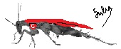

[FIRST STEP] Enter numerical values inside highlighted fields
[SECOND STEP] Calculate APRI==>
NORMAL: inferior to 0.50. ABNORMAL: superior to 1.50
PROGRAMMER AND AUTHOR of this program: FELIX RODRIGUES GULIAS - 2014